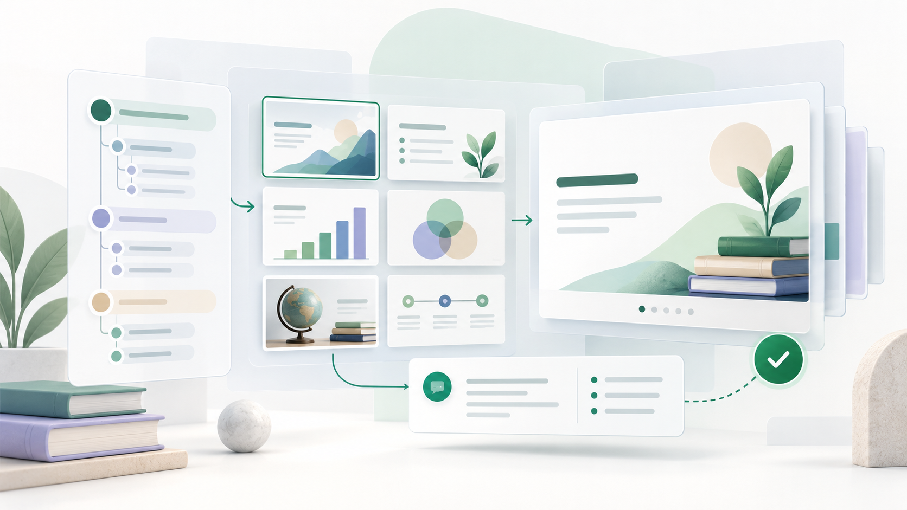
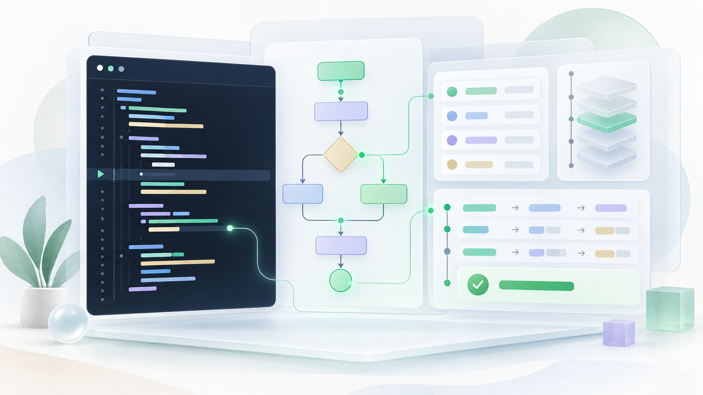
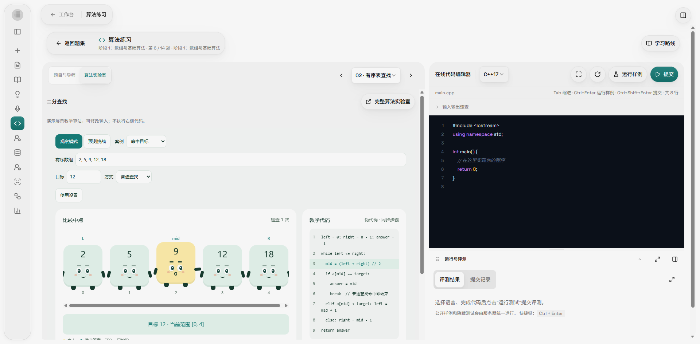
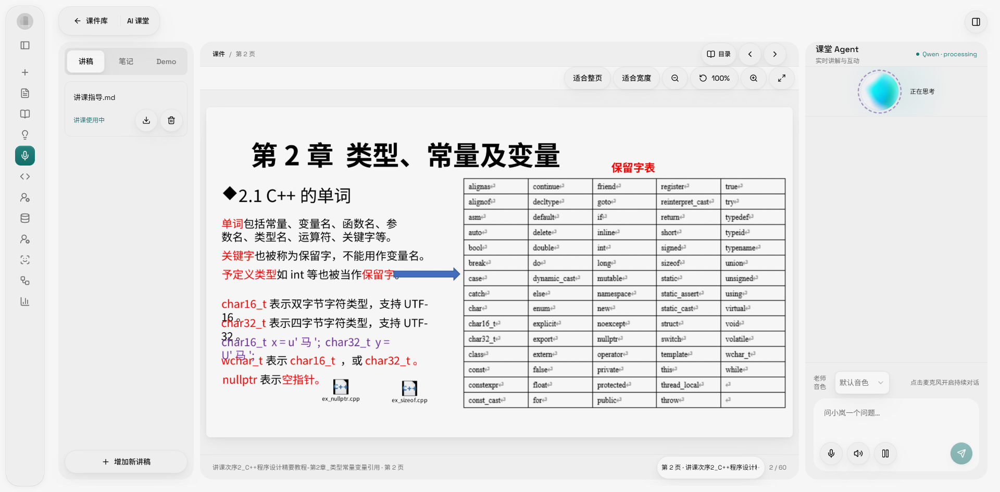

离校请假与销假
离校前需要按规定提交请假申请，说明离校时间、事由和预计返校时间。返校后按要求完成销假，逾期未销假需补充说明。
把问题、资料与课程
收进一个能核对的答案
面向高校学习、教学与校园事务的多智能体工作台。课程问答、事务咨询、PPT 制作、算法练习与 AI 模拟课堂，从一句自然语言开始——回答限定在你提供的课程资料与校园官方文件内，每一步都可核对。
这个角色能做什么
只能访问被授权的课程资料与自己上传的个人资料，看不到其他用户的内容。
这个角色能做什么
生成内容与资料改动都需经你确认后才生效，AI 不替代你的最终判断；问题沉淀不公开学生隐私、不直接改课程资料。
这个角色能做什么
回答只能引用已发布生效的政策文件，不覆盖在校外或未生效的版本。
使用学校账号进入，对话、文件与产物按账号隔离
离校前需要按规定提交请假申请，说明离校时间、事由和预计返校时间。返校后按要求完成销假，逾期未销假需补充说明。
选择一个模式，查看一个已验证案例。
四个模式共用同一套工作台组件，切换模式后会自动呈现一组代表性工作流，帮助你快速理解每种模式适合处理什么问题。
公共事务、知识学习、PPT 制作、算法练习，各自封装成一套固定的工作方式：管住该查哪些资料、按什么格式给答案，所以同一个问题每次都能答得具体、答得一致。
校园政策、事务咨询与办事指引。基于学生手册、成长手册与培养方案，把政策文件整理成你真正能执行的步骤——需要什么材料、走什么流程、哪些事项要再确认。
答案卡固定给出适用对象、政策版本、材料清单与办理步骤
已实现请假 · 专业分流 · 学分认定 · 培养方案等高频事务
课程问答与长期学习陪伴。先确认本次的课程与资料范围，再逐条按页引用课程资料讲解——概念、例子、易错点分开说清；围绕同一门课连续追问，并按你的目标与时间生成可执行、可调整的学习计划。
结论逐条引用资料页码，答案沉淀为笔记与复习卡
已实现课程问答 · 资料解读 · AI 笔记 · 自测题 · 学习计划

从主题、资料与结构要求生成教学内容与演示文稿。先跟你确认需求，再给出逐页方案（每页目的、信息量、引用与讲稿），确认后才渲染成可继续编辑的 PPTX，最后做页面质量检查——而不是给你一张无法修改的图。
可编辑 PPTX，支持页级修改与版本保留
已实现课件 PPT · 教案与讲稿 · 班会 PPT · 汇报 PPT

从题目解析到代码实现。C / C++ / Python / Java 四种语言的答案都要先在沙箱里编译运行、跑过可见测试，才标记为「已验证」；结论区分真实判题结果与 AI 辅助分析，不把解释当成实际执行。
四语言沙箱运行 · OJ 评测证据 · Python Tutor 代码执行可视化
已实现编程解题 · 代码讲解 · 实验排错 · 可视化调用栈与变量变化 · 错题复盘
从题库进入 OJ 题目，在同一工作区读题、编辑、运行和提交；切到「代码可视化」，用当前代码与公开样例逐步观察调用栈、变量、对象与引用关系。可视化用于理解过程，最终对错仍以本平台评测为准。


选择课件进入课堂，系统绑定这份课件的原文，按页讲解，你可以围绕当前页面随时提问、完成小测，语音与字幕辅助听讲。课堂中的问题、笔记与测验结果，都会回到你的学习记录里。
使用学校账号进入后即可选择场景、上传资料、发起对话。对话、文件与正在编辑的产物都跟你走——换一台设备打开，接着上次的地方继续。
学生、教师、助教与公共事务人员，各自看到适合自己的入口与产物。
课程问答、资料解读、AI 笔记、自测题、学习路线、编程解题与实验排错，校园事务也能一并办完；学习过程沉淀为可继续追问的个人资料空间。
基于课程资料生成可编辑的课件、教案、讲稿与 Quiz；课件进入 AI 模拟课堂供学生自主预习复习，学生的困惑与误区会汇总成教学洞察。
AI 生成的内容不会自动发布，教师审阅确认后才进入课程空间
学生问题自动去标识化、聚类去重，形成 FAQ 候选、误区库与典型错误库；高频困惑与实验错误热点一目了然，重复答疑变成可复用的教学资产。
培养方案、学生手册等政策文件统一接入并分域维护，事务咨询有依据、可核查；高频事务统计帮你看到学生最需要解释的部分。
配套管理后台：资料接入、权限配置与版本更新一处管理
每一步都可回看：问题进来，Agent 检索资料、生成结果，过程留在记录里。
进入公共事务、知识学习、PPT 制作或算法练习
用一句话说明目标，或拖入 PDF、PPT 等资料
识别意图与资料边界，必要时多 Agent 接力工作
限定课程或事务范围，检索原文并校验适用条件
得到回答、代码、PPT 或学习产物，并完成质量检查
继续追问、局部修改或复盘，产物进入个人知识空间
你感受到的是可靠、连续、可核查——每个结论都有依据，每个产物都能回访。
中心任务 Agent 负责理解意图、追问缺失信息、拆解任务与调度专业 Agent，不越过边界替它们写专业内容。
课程资料、公共事务资料、个人资料与产物分域隔离。范围不明确时先请你澄清，不会默认全库乱搜，也不会跨域串用。
回答建立在本次锁定的课程资料与校园文件之上，并如实标注是否查到对应依据——查不到时明说「暂无可用依据」，不会编造来源。
事务核对卡给出置信度与不确定性说明，依据不足时提示补充范围或转人工确认，而不是给一个无法核对的结论。
引用是否缺失、资料域是否越界、课件是否跑题、代码是否真的跑过，都会在交付前被检查，并给出可执行的返修动作。
长流程按节点保存进度，中途失败只重跑出错的节点；任务可以离开，回来接着上次的地方继续。
C / C++ / Python / Java 四种语言在沙箱执行，保存语言、输入输出、退出码、耗时与测试结果；没跑过的代码不会写成「已通过」。
课件、笔记、计划、题集与课堂记录都是可下载、可预览、可修改的产物，带版本历史与来源映射，而不是一次性文本。
发布、删除、导出等高风险动作需要你确认后才执行；个人资料默认不共享，记忆可查看、可关闭、可删除。
平台由华中科技大学计算机学院师生共建，当前处于内测阶段，按真实使用反馈逐步开放。
首轮版本已部署上线，面向校园网内测用户开放；正在推进问题优化与各模块服务器联调验收，建立测试反馈闭环。
邀请教师体验课程问答、PPT 生成与 AI 模拟课堂，收集真实教学场景中的反馈并迭代。
在稳定与可信基础上，逐步扩大学生开放范围，让 AI 成为每一位大学生的学习伙伴。